开心果 Need Car · 2023-02-17T06:54:00+08:00 · 微信原文
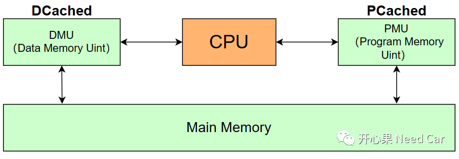
1、Cached和No Cached的区别
在芯片手册中，PFlash（tc397，16MByte）对应了两个Segment：Segment 8和Segment A，两者本质上是一块物理内存，因为访问方式不同，所以，同一块物理内存区被映射到了两个不同的Segment，如下所示：
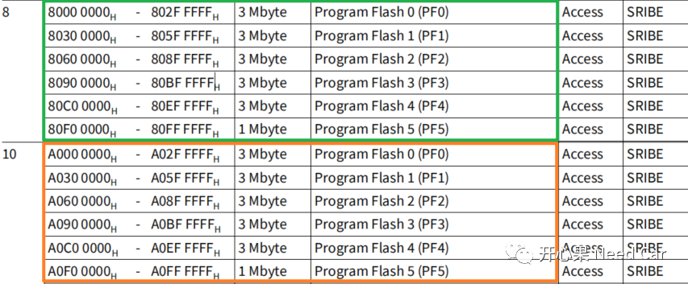
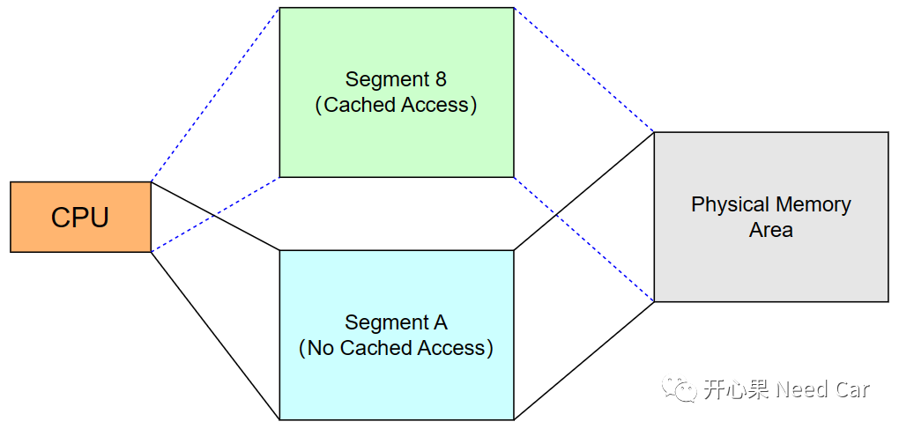
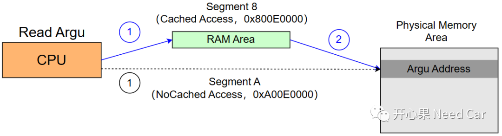
2、Cached使能
Cached功能又细分为PCached和DCached，两者相互独立，可以分别使能。在多核系统中，每个核均可单独使能Cached，Cached的使能一般在启动文件中操作，对于PCached和DCached的使能，每个核均有对应的操作寄存器。
（一）DCON0寄存器使能DCached
默认情况下，DCON0.DCBYP = 1，即：不使能DCached，如下所示：
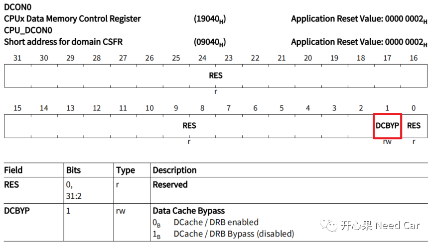
（二）PCON0寄存器使能PCached
默认情况下，PCON0.PCBYP = 1，即：不使能PCached，如下所示：
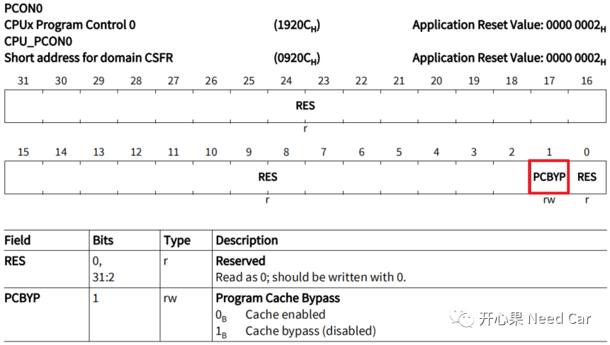
3、工程问题：使能Cached，导致数据不一致
Cached使能以后，如果不注意数据一致性保护，就会导致工程Bug。举一个工程问题：软件（Application）更新，复位ECU后，使用$31 01检查软件兼容性，校验不过。
（一）问题分析
Bootloader和Application中均使能了PCached、DCached功能，且软件兼容性参数存放在PFlash中。程序更新后，需要比对软件兼容性，只有参数与新存入PFlash中的参数一致，更新的Application才能生效。
DataArr = *((uint32*)0x800E0000);此时，软件兼容性参数为0x55555555，如下所示：
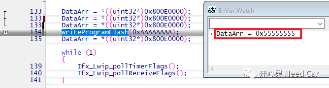
Step2：更新Application程序，同时更新指定地址（0x800E0000）处的软件兼容性参数为0xAAAAAAAA，如下所示：
writeProgramFlash(0xAAAAAAAA);Appliation程序更新，软件兼容性参数地址0xA00E0000（NoCached）和地址0x800E0000（Cached）均更新为指定值0xAAAAAAAA，如下所示：
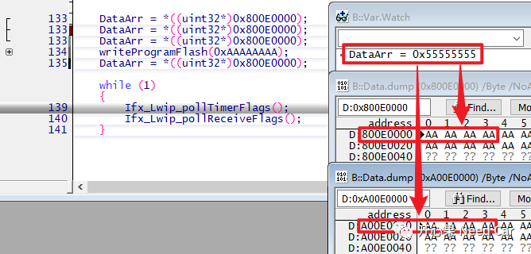
再次读取指定地址（0x800E0000）的软件兼容性参数，使用Cached方式读取，如下所示：
DataArr = *((uint32*)0x800E0000);读取软件兼容性参数，依然是0x55555555，并不是更新后的0xAAAAAAAA，这就导致了数据一致性被破坏，即：缓存区与主内存区数据不一致。当更新主内存的数据以后，因为缓存区数据依然存在，而当CPU再次访问时，在缓存区找到了该参数（hit，命中），优先使用了缓存区中的0x55555555，而不是主内存区的0xAAAAAAAA。
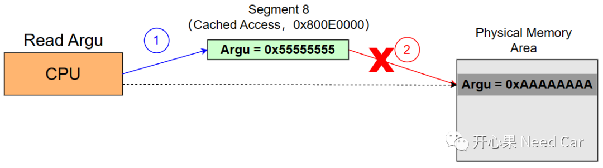
（二）解决策略
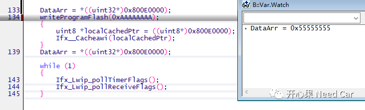
writeProgramFlash(0xAAAAAAAA);{uint8 *localCachedPtr = ((uint8*)0x800E0000);Ifx__Cacheawi(localCachedPtr);}
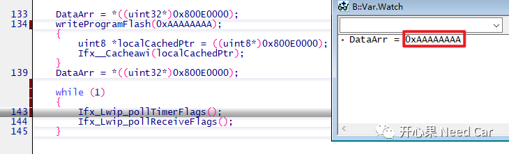
如上，可以看出，读出的数据为预期值，即：缓存区和主内存区值一致。
往期精彩回顾
Autosar EcuM：APP由RUN到POST_RUN浅析